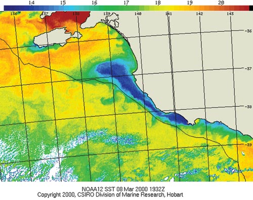

The Bonney Upwelling

This infra-red satellite image taken in March 2000 shows surface temperatures, where dark blue indicates the coldest water and red the warmest (see the scale at the top).
The thin black line shows the continental shelf edge (200m depth). The white feathery patches toward the bottom of the image are clouds.
The Bonney Upwelling’s dark blue plume originates near Cape Nelson, south of Portland, Victoria, and extends west past Robe toward Kangaroo Island, in South Australia.
Weaker surface upwelling is also evident as far east as Cape Otway, Victoria, and off the south coast of Kangaroo Island.
The influx of nutrients into this upwelling system provides the basis for what is probably the richest marine ecosystem in Australian waters.
Abundant swarms of krill Nyctiphanes australis support valuable commercial fisheries and a profusion of marine wildlife, including the iconic blue whale.